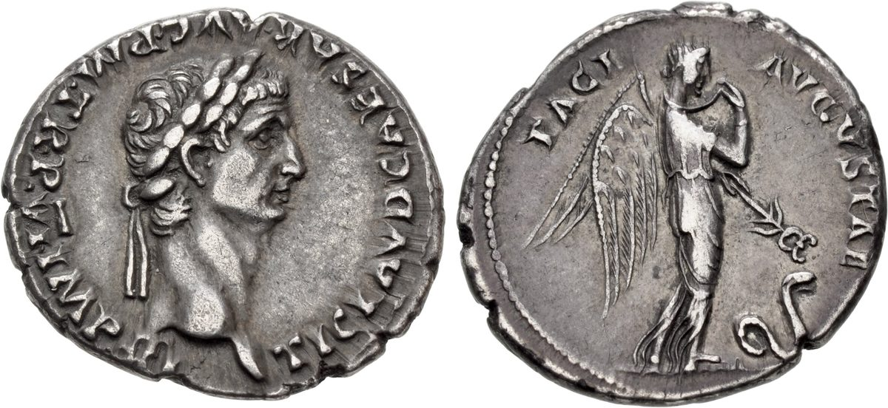

1 Thessalonians 5 — The Mister Translation

⚠ Struck at Rome a few years before this letter, the coin salutes PACI AVGVSTAE, ‘to Augustan Peace,’ with the winged figure of Pax-Nemesis. ‘When they are saying, “Peace and security,” then sudden destruction comes upon them’ (verse 3).

Translator’s Notes
“Now about the times and the seasons, brothers, you have no need for anything to be written to you.” “Now about” (peri de) opens a new subject, as at 4:9 and 4:13, and “no need for anything to be written” repeats 4:9. Chronoi and kairoi, “times” and “seasons,” are the pair of Acts 1:7, “It is not for you to know times or seasons” (dictionary, dictionary). The KJV reads “ye have no need that I write unto you”; the NIV reads “about times and dates we do not need to write to you”; the TLB opens with a question of its own, “When is all this going to happen?”
“The day of the Lord comes just like a thief in the night.” Hēmera kyriou is the prophets’ “day of Jehovah”: “the great day of Jehovah is near” at Zephaniah 1:14, and the day that is “darkness, and not light” at Amos 5:18; when Peter quotes Joel at Acts 2:20, these pages read “the day of Jehovah.” Here the Greek reads kyrios, and the translation keeps “Lord,” as at 1 Corinthians 5:5, because the Lord whose coming fills the passage is the Lord Jesus of 4:15–17. The NWT 1984 reads “Jehovah’s day is coming exactly as a thief in the night.” The thief is Jesus’ own comparison, the householder who did not know in which watch the thief would come at Matthew 24:43 and Luke 12:39, and the risen Lord’s “I will come like a thief” at Revelation 3:3; it comes back at 2 Peter 3:10 and Revelation 16:15. They know it “very well,” akribōs, accurately: what they know accurately is that the hour cannot be known. The KJV and ASV read “the day of the Lord so cometh as a thief in the night”; the TLB reads “That day of the Lord will come unexpectedly, like a thief in the night.”
“When they are saying, ‘Peace and security.’” Asphaleia, “security,” stands in three verses of the New Testament: the “certainty” Luke wants Theophilus to have at Luke 1:4, the prison “locked with complete security” at Acts 5:23, and this one (dictionary). ⚠ Readers hear the slogan two ways. One reading hears the prophets’ warning against a false peace, “saying, ‘Peace, peace,’ when there is no peace” at Jeremiah 6:14. The other hears Rome, which advertised itself on coins, monuments and inscriptions as the bringer of peace and security; Jeffrey Weima argued for that reading in New Testament Studies in 2012, and Joel White replied there in 2013 that “security” was never as clearly a Roman watchword as “peace.” This page sets out both and does not choose. The coin pictured with this chapter, a silver denarius of Claudius struck in AD 46–47, a few years before the letter, salutes PACI AVGVSTAE, “to Augustan Peace.” The Vulgate reads pax et securitas; the Douay reads “peace and security” and the NWT 1984 “Peace and security!”, while the KJV and NIV read “Peace and safety.”
“Sudden destruction comes upon them, as labor pains upon a woman with child.” Aiphnidios, “sudden,” stands in two verses: this one and Luke 21:34, “and that day come upon you suddenly,” where the verb for coming upon (ephistēmi) is also the verb here (dictionary). Olethros is “destruction” (dictionary). Ōdin, a labor pain, is the word of the “beginning of birth pangs” at Matthew 24:8 (dictionary): a birth is certain to come and cannot be scheduled. “By no means escape” is ou mē, the strongest Greek negation, as at 4:15. The KJV reads “as travail upon a woman with child; and they shall not escape”; the NWT 1984 reads “just as the pang of distress upon a pregnant woman”; the NIV reads “as labor pains on a pregnant woman.”
“Not in darkness, for the day to overtake you like a thief.” Katalambanō, “overtake,” is the verb of John 12:35, “so that darkness does not overtake you.” ⚠ Westcott and Hort printed kleptas, “thieves,” for kleptēs, “a thief”: the day would not overtake you as it overtakes thieves, and the thieves become the ones caught out by the dawn. The NWT 1984 follows the plural, “so that that day should overtake YOU as it would thieves”; the KJV and ASV keep the singular, “as a thief,” and the NIV reads “like a thief.” This translation follows the singular of its base text.
“You are all sons of light and sons of the day.” “Sons of” is the Hebrew way of saying that a person belongs to something; Jesus uses “sons of light” at Luke 16:8 and John 12:36, and Ephesians 5:8 says “Walk as children of light” with another word for children. Paul moves from “you” to “we” in the middle of the verse: “We are not of the night.” The KJV reads “Ye are all the children of light, and the children of the day”; the ASV and NWT 1984 keep “sons of light.”
“Let us not sleep, as the rest do, but let us stay awake and be sober.” “The rest” are the ones of 4:13 “who have no hope.” Grēgoreō is to stay awake: the householder who “would have stayed awake” at Matthew 24:43, and “Keep watch and pray” in Gethsemane at Mark 14:38 (dictionary). Nēphō is to be sober, not drunk, and verse 7 keeps it literal: night is when people sleep and when they get drunk; the verb returns at 1 Peter 1:13, “being fully sober,” and at 2 Timothy 4:5 and 1 Peter 4:7 and 5:8 (yet to come in this translation; dictionary). The KJV reads “let us watch and be sober”; the NWT 1984 reads “let us stay awake and keep our senses”; the TLB reads “So be on your guard, not asleep like the others.”
“The breastplate of faith and love, and for a helmet the hope of salvation.” The armor is Jehovah’s at Isaiah 59:17, where he puts on righteousness as a coat of mail and a helmet of salvation on his head. Ephesians 6:14 has “the breastplate of righteousness” and Ephesians 6:17 “the helmet of salvation”; here the breastplate is faith and love and the helmet is hope, the three of 1:3. Perikephalaia, “helmet,” stands in two verses: this one and Ephesians 6:17. Romans 13:12 has the same night and day: “let us put on the armor of light.” The KJV reads “and for an helmet, the hope of salvation”; the NIV reads “putting on faith and love as a breastplate, and the hope of salvation as a helmet”; the TLB adds a word, “the happy hope of salvation.”
“God did not appoint us for wrath, but for obtaining salvation.” The wrath is “the wrath that is coming” of 1 Thessalonians 1:10 (dictionary). Peripoiēsis, “obtaining,” is the noun that means “possession” at Ephesians 1:14, “the redemption of the possession.” The ASV reads “unto the obtaining of salvation”; the NWT 1984 reads “to the acquiring of salvation”; the Douay reads “unto the purchasing of salvation,” from the Vulgate’s acquisitionem.
“Who died for us, so that whether we are awake or asleep we may live together with him.” The verbs are the waking and sleeping of verses 6 and 7, and now they mean alive or dead: the question of 4:13–18 is answered in a sentence. The sleep is katheudō, the verb of Mark 5:39, “The child is not dead, but sleeping,” not the koimaomai of 4:13–15. Editions divide between peri (Westcott and Hort) and hyper (Nestle–Aland and the Byzantine text) for “for us”; the sense is the same. The TLB reads “whether we are dead or alive at the time of his return”; the KJV reads “whether we wake or sleep.”
“Comfort one another and build one another up.” “Comfort” is parakaleō, as at 4:18 (dictionary); “build up” is oikodomeō, as in “love builds up” at 1 Corinthians 8:1 (dictionary). The KJV reads “comfort yourselves together, and edify one another”; the ASV reads “exhort one another, and build each other up”; the NWT 1984 reads “keep comforting one another and building one another up.”
“To recognize those who labor among you and lead you in the Lord and admonish you.” “Recognize” is eidenai, “to know”; the KJV and Douay read “to know them,” the NIV “to acknowledge,” the NWT 1984 “to have regard for.” The verse names no office, only three things people do: they labor (the toil of 1:3, “labour of love”), they lead, and they admonish. Philippians 1:1, by contrast, greets “the overseers and servants.” Proistēmi, “lead,” is to stand in front of, and so either to be at the head of or to take care of, and versions divide: “the one who leads” at Romans 12:8, the KJV’s “are over you in the Lord,” the NIV’s “who care for you in the Lord.”
“To esteem them very highly in love because of their work. Be at peace among yourselves.” “Very highly” is hyperekperissou, as at 3:10 (dictionary); the NWT 1984 reads “to give them more than extraordinary consideration.” Eirēneuō, “be at peace,” stands in four verses: Mark 9:50, Romans 12:18, 2 Corinthians 13:11 and this one (dictionary). Tregelles printed autois, “with them,” for heautois, “among yourselves,” as the Vulgate has it, pacem habete cum eis, and so the Douay: “Have peace with them.”
“Admonish the disorderly, comfort the fainthearted, support the weak.” Ataktos is what is out of order, a word used of soldiers who break ranks (dictionary). ⚠ Readers take it two ways: the disorderly in general, or the idle in particular, reading it with “work with your hands” at 1 Thessalonians 4:11 and with 2 Thessalonians 3:6–11, where the same word family describes some who are “not busy at work.” The ASV and NWT 1984 read “the disorderly,” the KJV “them that are unruly”; the NIV reads “those who are idle and disruptive,” the TLB “those who are lazy.” This translation keeps “disorderly,” which holds both. Oligopsychos, “fainthearted,” literally “small-souled,” stands in one verse of the New Testament (dictionary); the NWT 1984 reads “speak consolingly to the depressed souls,” and the KJV “comfort the feebleminded.” “Be patient” is makrothymeō (dictionary).
“See that no one repays anyone evil for evil, but always pursue what is good.” The rule is that of Romans 12:17, “Repay no one evil for evil.” “Pursue” is diōkō, the verb that also means to persecute, used both ways side by side at Romans 12:13, “pursuing hospitality,” and Romans 12:14, “Bless those who persecute you.” The KJV reads “ever follow that which is good, both among yourselves, and to all men”; the NIV reads “always strive to do what is good for each other and for everyone else.”
“Rejoice always. Pray unceasingly. In everything give thanks.” Verses 16 and 17 are two words each in the Greek, pantote chairete and adialeiptōs proseuchesthe, and they are the only two-word verses in the Greek text this translation follows. “Rejoice” returns at Philippians 4:4, “Rejoice in the Lord always.” Adialeiptōs, “unceasingly,” stands in four verses, all in Paul: Romans 1:9, 1 Thessalonians 1:2, 1 Thessalonians 2:13 and this one (dictionary); Jesus tells a parable “about their need always to pray and not lose heart” at Luke 18:1. The KJV reads “Rejoice evermore. Pray without ceasing. In every thing give thanks”; the NWT 1984 reads “Always be rejoicing. Pray incessantly”; the NIV reads “give thanks in all circumstances.”
“Do not quench the Spirit. Do not despise prophecies.” Sbennymi is to put out a fire: the “smoldering wick he will not quench” of Matthew 12:20, the shield that can “quench all the flaming arrows” at Ephesians 6:16. The Spirit comes with fire at Matthew 3:11 and Acts 2:3. ⚠ The NWT 1984 reads “Do not put out the fire of the spirit,” with a small “s,” as it prints the holy spirit throughout; that follows the Witnesses’ teaching that the holy spirit is God’s active force rather than a person, a doctrinal choice the Greek does not make for it. The KJV reads “Quench not the Spirit.” “Despise” is exoutheneō, to count as nothing, as at 1 Corinthians 16:11, where Timothy is not to be despised. 1 Corinthians 14:1 asks for prophecy above the other gifts, and 1 Corinthians 14:29 adds “let the others weigh what is said.” The NIV reads “Do not treat prophecies with contempt.”
“But test everything; hold fast what is good.” Dokimazō is the word for assaying metal and coin, used of God “who tests our hearts” at 1 Thessalonians 2:4 and of testing what the will of God is at Romans 12:2. A saying not found in the Gospels, “become approved money-changers,” people who can tell a good coin from a bad one, was quoted very often by early Christian writers and sometimes attached to this verse on Paul’s authority, as the note to Eusebius’s Church History 7.7 in the Nicene and Post-Nicene Fathers records. “Hold fast” is katechō, as at 1 Corinthians 15:2 (dictionary for kalos, “good”). The KJV reads “Prove all things; hold fast that which is good”; the NWT 1984 reads “Make sure of all things; hold fast to what is fine.”
“Keep away from every form of evil.” “Keep away from” is apechomai, the verb of 4:3, “keep away from sexual immorality.” Eidos is what a thing looks like, as at Luke 3:22, “in bodily form,” and 2 Corinthians 5:7, “not by sight,” and so also a sort or kind (dictionary). ⚠ The KJV reads “Abstain from all appearance of evil,” and the Douay “From all appearance of evil refrain yourselves,” after the Vulgate’s ab omni specie mala; the verse is often quoted in that form as a rule to avoid even what looks wrong. The ASV reads “abstain from every form of evil,” the NWT 1984 “every form of wickedness,” and the NIV “reject every kind of evil.” This translation keeps “form” and leaves both senses in view. The Greek of Job 2:3 describes Job as “keeping away from every evil” with the same verb.
“May the God of peace himself sanctify you completely.” The prayer begins as the prayer of 3:11 began, “our God and Father himself”; “the God of peace” is the title of Romans 15:33 and Romans 16:20. “Sanctify” is hagiazō, the verb of the sanctification of 4:3–7 (dictionary). Holotelēs, “completely,” through and through, stands in one verse of the New Testament (dictionary). Holoklēros, “whole,” with nothing missing, and its noun stand in three verses: the “perfect health” of the healed man at Acts 3:16, this verse, and James 1:4, “perfect and complete, lacking in nothing” (dictionary). The KJV reads “And the very God of peace sanctify you wholly”; the NIV reads “sanctify you through and through.”
“May your spirit and soul and body be kept whole and blameless.” ⚠ This verse and Hebrews 4:12 are the passages usually cited for a three-part view of the human being, spirit, soul and body. Others read “spirit” and “soul” as two names for the inner person, and the list as a way of naming the whole person, like “with all your heart, and with all your soul, and with all your utmost” at Deuteronomy 6:5, which Mark 12:30 gives with four terms. This page sets out both and does not choose (dictionary, dictionary, dictionary). “At the presence” is parousia, the fourth time in this letter, after 2:19, 3:13 and 4:15, and “blameless” answers the “blameless in holiness” of 3:13 (dictionary). The KJV reads “your whole spirit and soul and body be preserved blameless unto the coming of our Lord Jesus Christ”; the NWT 1984 reads “in a blameless manner at the presence of our Lord Jesus Christ.”
“Faithful is the one who calls you, and he will also do it.” God is the one “who calls you” at 1 Thessalonians 2:12, and 1 Corinthians 1:9 has the same pairing: “God is faithful, through whom you were called.” The KJV reads “Faithful is he that calleth you, who also will do it”; the TLB reads “God, who called you to become his child, will do all this for you, just as he promised.”
“Brothers, pray for us.” Westcott and Hort and Nestle–Aland add kai, “also”: “pray for us too,” as they have been praying for the readers since 1:2. The KJV, ASV and NIV read “pray for us”; the NWT 1984 reads “continue in prayer for us.”
“Greet all the brothers with a holy kiss.” The holy kiss stands in four verses, all at the close of a letter of Paul: Romans 16:16, 1 Corinthians 16:20, 2 Corinthians 13:12 and this one (dictionary); 1 Peter 5:14 has “a kiss of love”. About a century later Justin Martyr, describing how a newly baptized believer is brought to the gathering at Rome, writes: “Having ended the prayers, we salute one another with a kiss” (First Apology 65). The KJV reads “Greet all the brethren with an holy kiss”; the NIV reads “Greet all God’s people with a holy kiss”; the TLB reads “Shake hands for me with all the brothers there.”
“I put you under oath by the Lord to have this letter read to all the brothers.” Enorkizō, “to put under oath,” stands in one verse of the New Testament (dictionary). The “we” of the letter becomes “I,” as at 2:18, “I, Paul,” and 3:5, “I too”: the writer takes the pen, or the dictation, for the last word. The letter is to be read aloud to the whole congregation, as Colossians 4:16 asks of another; if this is the oldest Christian writing, as the opening chapter of this letter takes to be very probable, this is the oldest surviving instruction to read a Christian text aloud. The Byzantine text reads the simpler horkizō and “all the holy brothers”: the KJV reads “I charge you by the Lord that this epistle be read unto all the holy brethren”; the ASV reads “I adjure you by the Lord that this epistle be read unto all the brethren”; the NWT 1984 reads “I am putting YOU under the solemn obligation by the Lord.”
“The grace of our Lord Jesus Christ be with you.” ⚠ Later copies add a closing note, which the Textus Receptus prints, that the letter was written from Athens, and the Geneva ends “The first Epistle unto the Thessalonians written from Athens.” The note is not part of the letter. The Byzantine text also adds “Amen,” which the KJV and Douay print; the ASV, NIV and NWT 1984 end without it. Paul was left at Athens when he sent Timothy (3:1–2), but by the time of writing Timothy had come back (3:6), and Acts 18:5 has Silas and Timothy come down from Macedonia to Paul at Corinth; for that reason the letter is usually dated from Corinth.
Patterns worth carrying forward
Where this translation keeps the exact words: “times” and “seasons,” as at Acts 1:7; “the day of the Lord,” as at 1 Corinthians 5:5; “security,” with the Vulgate’s securitas; “overtake,” as at John 12:35; “sons of light,” as at Luke 16:8; “stay awake,” as at Matthew 24:43; “the rest,” as at 4:13; “breastplate” and “helmet,” as at Ephesians 6:14–17; “comfort” for parakaleō, as at 4:18; “very highly,” as at 3:10; “be at peace,” as at Romans 12:18; “disorderly,” undecided; “evil for evil,” as at Romans 12:17; “unceasingly,” as at 1:2 and 2:13; “despise,” as at 1 Corinthians 16:11; “hold fast,” as at 1 Corinthians 15:2; “keep away from,” as at 4:3; “presence,” as at 2:19; and “blameless,” as at 3:13.
Echoes paid. “No need” to write, as at 1 Thessalonians 4:9; the faith, love and hope of 1 Thessalonians 1:3, now armor; the wrath that is coming of 1 Thessalonians 1:10; the sleeping of 1 Thessalonians 4:13, now awake or asleep and alive with him either way; “comfort one another,” again from 1 Thessalonians 4:18; “work with your hands” from 1 Thessalonians 4:11, behind the disorderly; prayer unceasingly, as Paul prays at 1 Thessalonians 1:2; the God who calls you of 1 Thessalonians 2:12; the presence and the blameless of 1 Thessalonians 3:13; and Paul’s own “I” from 1 Thessalonians 2:18.
Echoes planted. The day of the Lord returns at 2 Thessalonians 2:2, where some are saying it has already come; and the disorderly return at 2 Thessalonians 3:6–11, where the word is used of those “not busy at work.”
This is the last chapter of 1 Thessalonians. The next letter is 2 Thessalonians 1, already on these pages.